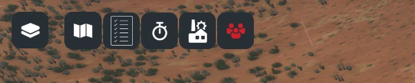

Bug Watch - Stuck Passengers
Passengers who queue at an overcrowded stop can stop boarding altogether. This mod watches every departure and lists the stops where it happens.

Stuck Passenger Alert
Setting: Stuck Passenger Alert · On by default
- 1Red while any line stop has stuck passengers; grey otherwise.

- 1How many line stops have stuck passengers, and how many departures were watched.
- 2The line. The pin moves the camera; a click on the name opens the line.
- 3The line's vehicles: a click opens the Line Manager on the line.
- 4The stop where they are stuck.
- 5Passengers waiting there.
Why
Passengers who join the queue at a stop while it is over capacity can stop boarding altogether: buses and trains of their line arrive, open their doors and leave with free seats while the same passengers keep waiting, even after the stop is no longer full. They also keep the stop full, so more passengers get stuck. Commuters among them never reach work. Deleting and rebuilding the line frees them for a while, until the stop overflows again.
What it does
The mod watches every departure. When vehicles leave with three or more seats free while the same passengers stay behind a second time, that line stop counts as stuck. A vehicle leaving with a seat or two free is just nearly full at a busy stop.
It doesn't fix the bug: it shows where it happens, so you can act on it, for example by rebuilding the line or by adding vehicles so the stop doesn't overflow.
How to use
- Watch the people icon beside the Data Layers button at the top left: it turns red while any line stop has stuck passengers.
- Click it for the list. A pin moves the camera to the line or stop; a click on a name opens its window.
- Click a line's vehicles to open the Line Manager on that line.
Good to know
- A stop drops off the list once its stuck passengers have boarded or left.
- It only reads the game, keeps nothing in your save and can be removed at any time, for example once the game itself is fixed.
Settings
Choosing a save's mods: the gear next to Bug Watch - Stuck Passengers → Settings. Each save keeps its own choice. Off turns a feature off completely.
| Setting | Default | What it does |
|---|---|---|
| Stuck Passenger Alert | On | A people icon beside Data Layers turns red when vehicles leave passengers behind at a stop with 3+ seats free; its window lists the line, its vehicles, the stop and who waits. |
| Logging | Off | Writes the mod's messages to the game log (stdout.txt), for bug reports. |
More
Compatibility
Works with any map and any other mod. Tested on game build 40444, where the game bug is still there.
Changes
1.0: First release.